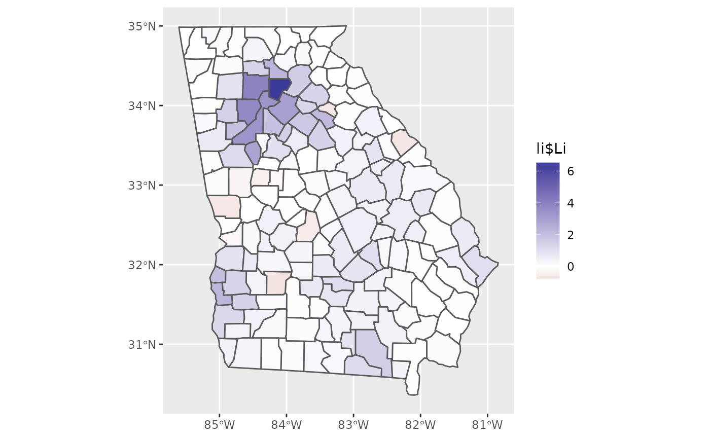

lisa.RdA local indicator of spatial association (lisa).
lisa(x, w, type = FALSE)
| x | Numeric vector |
|---|---|
| w | An n x n spatial connectivity matrix. See shape2mat. If |
| type | Return the type of association also (High-High, Low-Low, High-Low, and Low-High)? Defaults to |
Anselin, Luc. "Local indicators of spatial association—LISA." Geographical analysis 27, no. 2 (1995): 93-115.
If type = FALSE a numeric vector of lisa values for exploratory analysis of local spatial autocorrelation. If type = TRUE, a data.frame with columns zi (the lisa value) and type.
The values will be standardized with z = scale(x) first and w will be row-standardized if needed. The LISA values are the product of each z value with their respective mean surrounding value lagz = w %*% z; lisa = z * lagz. These are for exploratory analysis and model diagnostics. The function uses Equation 7 from Anselin (1995).
An above-average value (i.e. positive z-value) with positive mean spatial lag indicates local positive spatial autocorrelation and is designated type "High-High"; a low value surrounded by high values indicates negative spatial autocorrelation and is designated type "Low-High", and so on.
moran_plot, mc, aple
#> #>#> [1] 1.25479465 0.34727617 0.10419958 -0.02779062 0.70389653 1.03079584